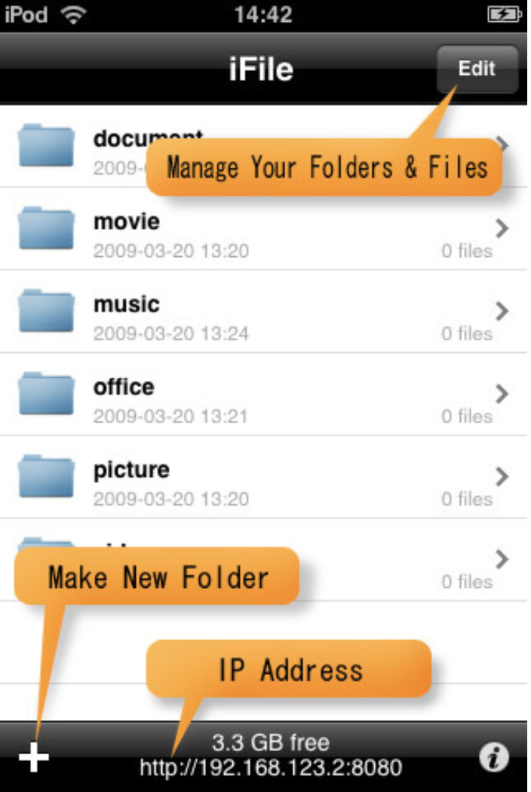
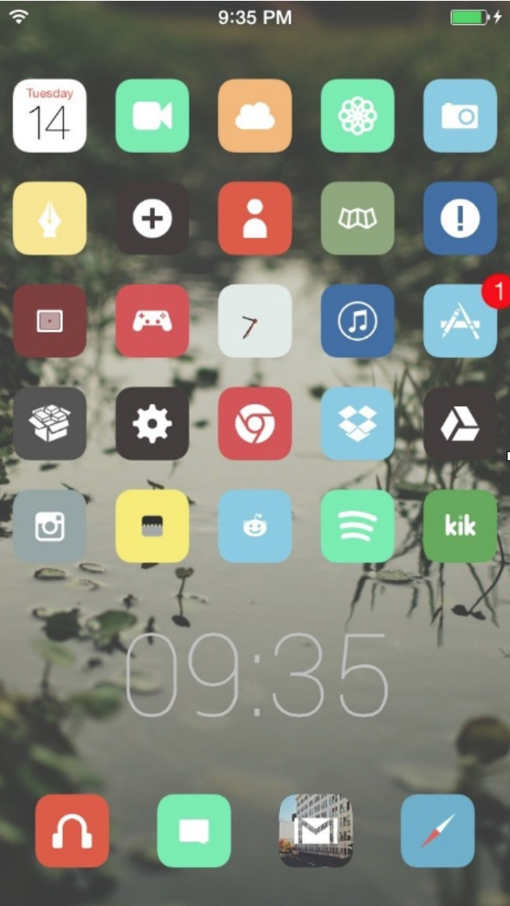

An Ode to Jailbreaking
Can you have a photo of the thief who just stole your iPhone e-mailed to you? Can you clean up your cache and temporary files to free up what precious little space you have on your iPhone? Can you even explore your local file system with simple Cut / Copy / Paste functions? No, I’m afraid with a stock iPhone, you cannot do any of these things. Everyone knows that Apple’s iPhone, while dominating the mobile market and generally deemed more aesthetically pleasing, is nowhere near as in-depth and intuitive as Google’s Android counterparts. But there is a side to the mobile operating system that Apple does not want you to know about— a side they tried to deem illegal and immoral until the Supreme Court ruled otherwise not too long ago.
It’s called jailbreaking. The term is derived by breaking the device out of the Apple developers’ strict coding “jail” in order to run user made tweaks and software. This procedure has been around since around since the early days of the iOS, circa 2007. Developers started using this exploit to run applications that Apple deemed unsuitable for the App Store. Since then, it has evolved into allowing one to tweak certain system setting, apply custom themes, and even allow one to boot Android’s operating system on an iDevice.
Personally, I can’t go a day without this one Jailbreak exclusive app called iFile. iFile allows one to browse the internal file system, with cut / copy / paste functions, which, might I add, was a major bummer to not have after making the switch from Android. Another essential is iCleaner, which I run about once a month to remove unnecessary temporary files and clogged caches, which in turn frees up nearly one gigabyte of precious internal storage. Activator is a fantastic tweak that allows any user to map out custom button and finger gesture processes. I have mine tuned to skip to the next song if I hold down the volume up button and to skip back if the volume down button is held. Undoubtedly, though, one of the most ingenious jailbreak tweaks is allowing a photo and location data to be sent to one’s e-mail of the thief who just incorrectly entered your phone’s four digit passcode. I’ve read a great deal of success stories of users that were able to give police crucial information on said perpetrators.
But, don’t just take my word for it. I talked with a fellow who is no less than a genius on the subject and got his take. He is a software developer by the name of Eddie Noyes and he has jailbroken two iDevices in the past. I started off by asked him what got him into the jailbreaking scene, to which he replied, “In the beginning iOS didn't support multitasking, the interface also lacked an easy way to adjust certain features of the phone such as enabling Bluetooth or adjusting screen brightness without going into the phones settings. Today, you can swipe from the top of most any phone and have easy access to these features. iOS at the time didn't have them, so I turned to jailbreaking. I also wanted to tether my unlimited data plan and turn my phone into a wifi hotspot and jailbreaking allowed me to do that as well.”
I went on to get his take on the legality of the issue and whether or not Apple had a point on attempting to outlaw it. Back in 2007, when jailbreaking the iOS platform came to be, Apple tried to rule a court order against the practice, which the Supreme Court upheld and deemed legal in 2010. Mr. Noyes had quite a clever way of putting his stance on it, “Would you have a problem if your brand new car had an amazing sound system that would only play Justin Bieber? Or a microwave that you aren't allowed to heat chicken in? My favorite part Apple threw into the iTunes EULA is, ‘You also agree that you will not use these products for any purposes prohibited by United States law, including, without limitation, the development, design, manufacture or production of nuclear, missiles, or chemical or biological weapons.’” He continued with, “The iPhone is a tool, it can be used for good or evil. I think Apple would have a PR disaster if they disabled phones that had been jailbroken as there are too many privacy issues. I'll also add that jailbreaking must be pretty terrible for Apple to hire some of the jailbreak developers to their iOS dev team! Illegal just seems extreme, I think most normal companies just warn people that they risk voiding their warranty.”
Eddie makes a good point, as with every iOS update there are always multiple features added to the official release that have already been made available on Cydia for a good while already. For instance, iOS 7 added an app multi-tasking feature that looked strikingly like a jailbreak tweak that had been available for years before. iOS 8 continued the trend by adding custom user made keyboards (for a fee, of course), of which there had been an multitude of via Cydia already. So it raises the question, who are the real innovators here? Apple’s highly paid developers or the independent ones who work for free?
It is a bit striking to note that while the jailbreaking community has become relatively prominent, only about 1% of all iPhone users have actually utilized the exploit. A 2013 Forbes report noted that a ‘startlingly’ seven million have done so, but compare that to the five hundred million iPhones that have been sold worldwide and that figure hardly seems significant. Surely, there were more Jailbreak users out there than a year old Forbes report claimed, or so I thought. So I asked a man, by the name of Christian Turner, who runs a smartphone repair shop called StayMobile located in Charlotte, NC for his take on it. Mr. Turner is the Director of Training and Support there and said he sees his fair share of jailbroken devices. In fact he claims that one in every ten iPhone and Android phones brought in are Jailbroken or rooted, which I found a bit staggering. Though, he claims a fair more Android users come in with a rooted device than jailbroken iPhones.

(iFile allows users to manage internal folders and storage within iOS)
Rooting is in the same vein as jailbreaking, but a tad more in-depth. As Christian Turner described it, “Rooting an Android device gives a user complete root access to their Android OS, allowing the user to see and manipulate code, ROMs, hardware functions and much more. Since Android is open source and supports open development, rooting is very common with developers for things such as Applications and games.” This brings me to another point, if a developer really wanted open source coding on a phone, why even have an iPhone? Wouldn’t a rooted Android suffice for that niche market of nerds out there, hankering to run their own source code?
Well, yes and no. After owning an Android phone for two years, I felt like a bad apple in a basket of well to-do ripe ones. Nearly nothing out there supports the Android OS. From car stereos, to MP3 boom boxes, to even a decent selection of phone cases, not a one of them has an incredulous amount of support for the Android user. We live in an iPod-compatible-only world I came to learn.
I’ve outlined a fair bit of key points of the wonders of jailbreaking, but what about the bad? Sure, rampant piracy, that isn’t particularly wonderful. Stability is another aspect that hasn’t been completely debugged by the community yet. If one were to run two jailbroken scripts that clashed with each other, the iPhone, as has happened with me multiple times, locks up and goes into safe mode where you have to tediously get at what it is exactly that you installed that FUBAR’d your device. To be fair, it rarely happens, but when it does, you better sit down and tinker about for a bit.
I got in touch with a programmer by the name of Chris Gill at Midlands Tech who has jailbroken two devices, an iPod Touch and an iPhone 4. He told me about his traumatic experience of attempting to install a custom Ford Mustang theme on his iPhone when, unfortunately, the device crashed and became stuck in a permanent bare Apple booting screen. Mr. Gill solved this by painstakingly reformatting the device via iTunes back to its factory settings. Although, this was back in a time when jailbreaking was incredibly unstable and didn’t have much of a safe mode, I asked if he would ever consider doing the procedure again. “No, not on primary device, or something you use every day,” he stated, “If something happens on that, it doesn’t matter.” Well put.

(Users can download thousands of iPhone themes from Cydia repositories)
While some may not have the best of luck with the procedure, I compiled a list of features that those who had jailbroken claimed to be worth the price of admission. As Eddie Noyes stated, SBSettings, the dropdown menu that came years before the one implemented in iOS 7’s in 2013 and was nothing short of revolutionary back in the day. I asked a colleague of his, by the name of Lee Reams, what he utilized most. His response was a tweak that I wasn’t aware of called BiteSMS, which is an incredibly more in-depth alternative to Apple’s default Messaging application. One can store contact photos, queue messages to be sent at designated times and even password protect certain conversations from snooping strangers. Perhaps the best response to this question was when I asked a coworker of Mr. Turner’s at Stay Mobile the same thing, named Tim Atkinson. His go-to modification list included, “fine-tuned CPU and GPU control (overclocking mostly), Wi-Fi Tethering, modifying system files and removing system apps.” But even my previous Midlands Tech interviewee that didn’t have the best of luck with jailbreaking couldn’t deny that the incredible amount of system themes are astonishing.
So is jailbreaking truly worth all the hassle and potential turmoil? Well it really depends on who you ask that. As I’ve learned from this research, no, most run of the mill consumers probably wouldn’t care for it. The risk of total system failure and the stained reputation of it is quite a turnoff. This isn’t necessarily a bad thing, though. One could make the argument that piracy would be at an astronomical level if every ordinary user out there were vying to jailbreak their iDevice. App sales would plummet and our Apple Lord Tim Cook would be less than pleased. But for those out there who want full and unrestricted access to a best-selling phone that is compatible with every other third party device on the market, then yes. Yes it is.
But, is there a future for it? I will end with Eddie Noyes’s thoughts on the matter, “I think there will always be a group of people exploiting technology for good or worse. Maybe they want a feature that Apple won't approve in their App Store, maybe they're trying to do something illegal with their phone to install cracked apps. Maybe it won't be called jailbreaking in the future, but there will always be people who use their technology in unconventional ways.”